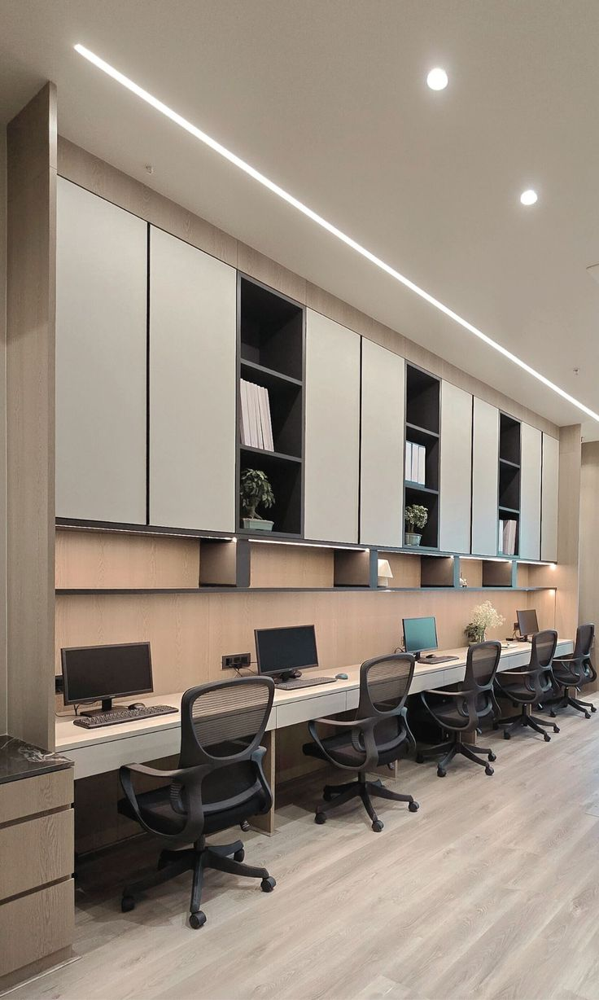
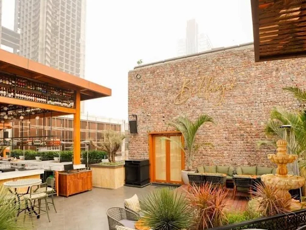
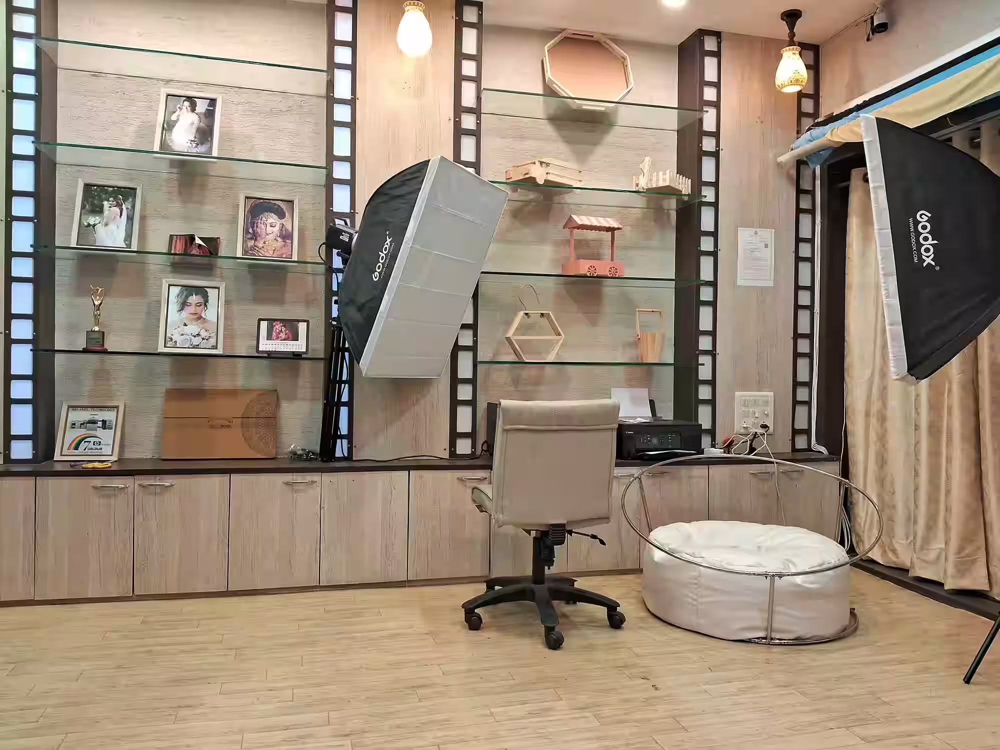
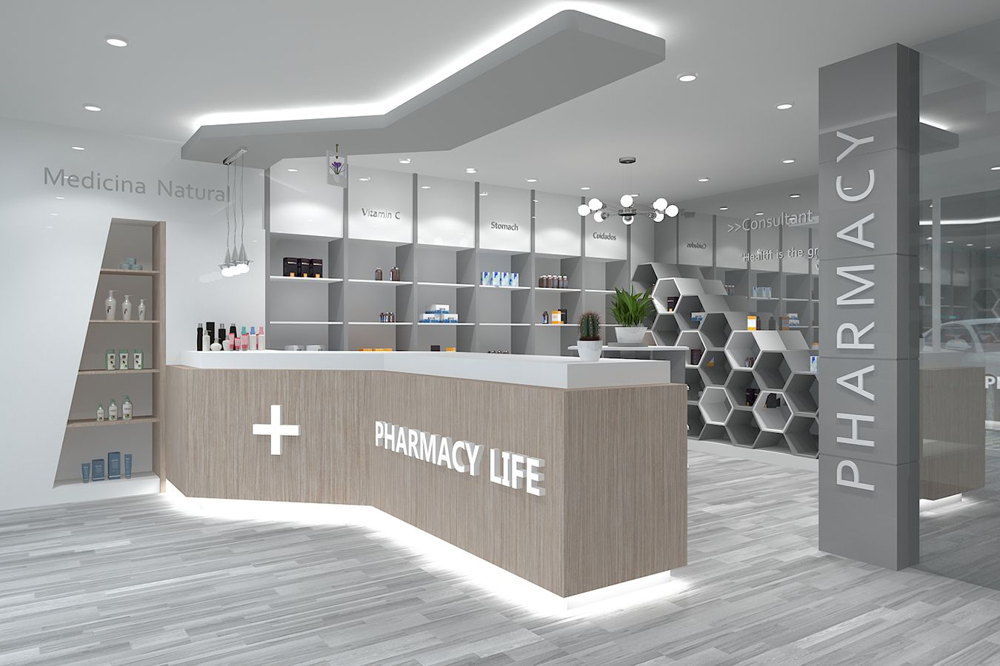
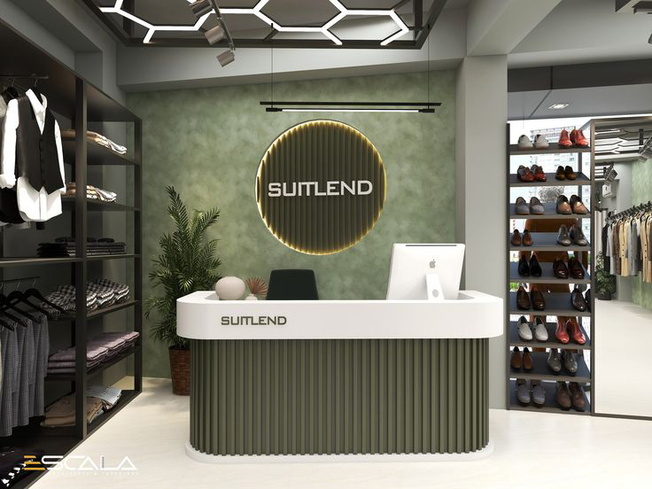

At RS Ranjeet Sharma Furniture & Interior, we specialize in on-site furniture manufacturing and interior fit-out execution for corporate offices, retail, hospitality, and residential projects. We work strictly from client-approved drawings and finalized requirements, with close supervision at every stage.
We execute modular furniture, workstations, storage, POP ceilings, partitions, and finishing works with accurate measurements, clean alignment, and reliable handover timelines.
At RS Ranjeet Sharma, our core strength lies in disciplined on-site execution backed by deep technical knowledge and practical experience. We handle complete furniture manufacturing, modular systems, custom millwork, partitions, ceilings, and interior coordination under a single execution framework.
Every project begins with site understanding, drawing study, and execution planning. We align manpower, materials, tools, and service coordination before starting work. Accuracy in measurements, sequencing of activities, and strict quality checks ensure smooth workflow and timely delivery.
Our teams specialize in corporate offices, commercial environments, retail interiors, hospitality spaces, and high-end residences. We work closely with architects, consultants, and clients to convert drawings into reliable built environments with long-term performance.
From structure to finishing, we focus on durability, functionality, and clean detailing. Our capability is not only in making furniture, but in managing complete interior execution responsibly from start to final handover.
Delhi NCR | 6500 sq.ft | Corporate Workspace
This corporate office project represents our complete interior execution capability from structure to final handover. The project involved workstations, executive cabins, conference rooms, storage systems, reception counters, and service coordination across multiple departments.
Execution began with site marking, level checks, and service layout planning. Modular workstations and storage units were manufactured and assembled on site with strict dimensional accuracy. All furniture components were fixed with proper anchoring, leveling, and edge finishing to ensure long-term stability.
Special attention was given to circulation flow, cable routing, and power access within each workstation cluster. Electrical cut-outs, data ports, and ventilation clearances were integrated during installation to avoid rework and future maintenance issues.
Glass partitions, acoustic panels, and executive furniture were installed with precise alignment and sealing. Each zone was checked for ergonomics, accessibility, and functional usability before final polishing and cleaning.
The project was delivered within committed timelines with zero structural rework and minimum site disturbance. Final inspection and handover confirmed clean finishing, stable installation, and reliable daily performance suitable for long-term corporate operations.

Sohna | Bars
Delhi NCR | 2500 sq.ft | Bars & Lounges
At RS Ranjeet Sharma, we specialize in execution of bar and lounge interiors with a strong focus on structural strength, operational efficiency, and long-term durability. Hospitality spaces require precision execution because furniture, counters, and finishes are subjected to continuous public use, moisture exposure, and heavy service loads.
Our work includes fabrication and installation of bar counters, back bar storage systems, seating arrangements, wall paneling, feature ceilings, service counters, and circulation layouts. Every element is executed based on approved drawings, service coordination, and exact site measurements to ensure perfect alignment and smooth operations.
Special care is taken in selecting moisture-resistant boards, reinforced frameworks, heat-resistant counter surfaces, and impact-resistant finishes. Electrical routing, lighting integration, ventilation clearance, and plumbing coordination are executed during installation to maintain clean finishing without visible service lines.
Our execution approach ensures that bar and lounge interiors remain visually appealing, structurally stable, and functionally efficient throughout years of continuous operation.

Noida |1800 sq.ft | Recording & Creative Studio
This creative studio project was designed and executed to support professional recording, editing, and production operations within a compact floor area. The space includes a main recording room, sound control cabin, editing workspace, and reception lounge.
Custom wall paneling with acoustic backing improves sound clarity and reduces echo across working zones. Furniture systems were fabricated with vibration-controlled fixing to avoid noise generation during operation. Storage units and equipment racks were planned to maintain easy access without obstructing movement.
Lighting layout balances functional task lighting with ambient illumination to reduce eye strain during long working hours. Ventilation grills and service access panels were integrated discreetly into wall and ceiling finishes to preserve clean visual lines.
The final execution delivers a technically stable, acoustically controlled, and visually refined studio environment suitable for continuous professional use.

South Delhi | 2200 sq.ft| Medical Clinic Interior – Healthcare Consultation Facility
This medical clinic project was executed with primary focus on functional medical furniture, durable material selection, and accurate installation suited for daily clinical operations.
Initial measurements were taken to plan consultation desks, doctor workstations, examination storage units, reception counters, nurse stations, and medical cabinetry according to clinical workflow. Each furniture unit was designed to support easy movement, safe equipment handling, and efficient patient interaction.
All furniture units were manufactured using moisture-resistant boards and antibacterial surface laminates suitable for healthcare environments. Edge banding and joint sealing were executed carefully to prevent dust accumulation and moisture penetration.

NCR | Corporate Entry Zone
This corporate finance department project focused on precision workspace planning, structured storage systems, and executive desk installation. Workstations and cabins were executed with strict alignment control to maintain clear circulation paths and functional zoning.
Special attention was given to file storage capacity, secure partitions, and acoustic separation between operational zones. Electrical routing and data management were integrated during installation to avoid surface wiring and future disruptions.
All furniture units were fixed with reinforced anchoring and leveling checks to ensure long-term stability under daily operational load. The final execution delivered a disciplined corporate environment suitable for high-performance finance operations.

What our clients say about our execution quality and reliability
“RS Ranjeet Sharma handled our corporate office furniture work with complete discipline and accuracy. Measurements were perfect, finishing was clean, and the project was delivered on time without any rework. Very reliable execution team.”
“Our bar and lounge furniture required strong structure and moisture-resistant materials. The execution quality was excellent and all counters and seating are still performing well after heavy use. Highly satisfied with the workmanship.”
“We assigned our clinic furniture work to RS Ranjeet Sharma and the result was very professional. Storage planning, doctor tables and reception counters were executed exactly as required. Clean finishing and timely completion.”
“We assigned our head office furniture and storage work to RS Ranjeet Sharma and the execution quality was outstanding. Every workstation, cabinet and partition was installed with proper leveling and alignment.”
“Modular kitchen and wardrobe work was executed with very clean finishing and strong materials. The team was disciplined, polite and completed the work exactly within the committed time.”
“For our café furniture and service counter work, structural strength and moisture protection were very important. RS Ranjeet Sharma executed everything with proper reinforcement and finishing.”